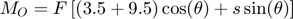
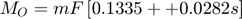

Problème 2/39, Meriam p. 45

Contents
Données
r est un vecteur ayant comme origine O jusqu'au centre de la pièce de monnaie.
clear; clc; close all m = 3.06e-3; % kg a = 9.821; % m/s² (Annexe D) à 37.5° de latitude s = 4; % mm (à l'échelle du graphique) mF = m*a; % N, Norme de F = m a
Étape 1 – Démarche vectorielle
r = [s, 3.5+9.5, 0]; % mm theta = -90+20; % degrés, convention de atan2 F = mF*[cosd(theta), sind(theta), 0]; % N Mo = cross(r,F); fprintf(' r = %+8.4fi %+8.4fj %+8.4fk m\n',r); fprintf(' F = %+8.4fi %+8.4fj %+8.4fk kN\n',F); fprintf('Mo = %+8.4fi %+8.4fj %+8.4fk lb·po\n',Mo);
r = +4.0000i +13.0000j +0.0000k m F = +0.0103i -0.0282j +0.0000k kN Mo = +0.0000i +0.0000j -0.2466k lb·po
Étape 2 – Expression scalaire
Norme = norm(Mo); fprintf('Norme de Mo = %.4f N·mm',Norme); MomentPositif = Mo(3) > 0; % variable logique if(MomentPositif) fprintf(' dans le sens antihoraire\n'); else fprintf(' dans le sens horaire\n'); end
Norme de Mo = 0.2466 N·mm dans le sens horaire
Démarche scalaire (ajout)
Poser le système des axes x et y au point O en suivant le plan oblique (slant). Remplacer la force par ses composantes rectangulaires et appliquer le théorème de Varignon.

m = 3.06e-3; % kg a = 9.821; % m/s² (Annexe D) à 37.5° de latitude mF = m*a; % N, Norme de F = m a
Valeur approximative du bras de levier. Selon l'énoncé, la solution doit être en fonction de s. Mais une approximation permet d'évaluer la masse du culbuteur (non demandé dans l'énoncé).
dy = 3.5 + 9.5; % mm (bras de levier) theta = 90-20; % degrés Fx = mF*cosd(theta); Fy = mF*sind(theta); Mo_1 = Fx*dy; % sens horaire Mo_2 = Fy*s; % sens horaire Mo = Mo_1 + Mo_2; fprintf('Norme de Mo = %.4f N·mm',Mo); fprintf(' dans le sens horaire\n');
Norme de Mo = 0.2466 N·mm dans le sens horaire
Sous la forme d'une équation :


Masse du culbuteur
À effectuer plus loin dans le cours après l'étude du centre de masse au chapitre 5.